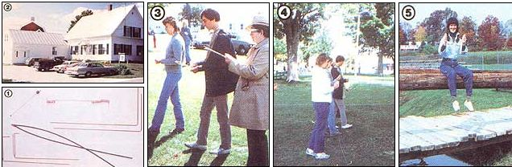

Last fall, carrying a sparsely packed knapsack and all manner of misconceptions about dowsing, MOTHER's staffer Fran Adams trekked off to the lovely Green Mountains of upstate Vermont to visit the Dowsing Center of America in order to seek out the truth behind the legendary forked willow branch. She made two startling discoveries: [1] that modern-day dowsers think there's a whole lot more to their art than just snooping out water, and [2] that-son of a gun!-as far as she could tell, it really and truly . . . well, read Fran's report to see for yourself what happened.
In mid-September, equipped with what I considered to be enough skepticism to ward off any potentially mind-boggling phenomena, I headed off to Danville, Vermont to attend the 23rd Annual Convention and the school of The American Society of Dowsers, Inc. Since I'd read in the brochure that the implausible-sounding theme for this year's week-long event was "Dowsing: Steps to Higher Consciousness", I figured I was in for little more than a few pleasant days of enjoying the fall colors and watching a bunch of spacey old codgers in overalls wander about in search of the Zen of water.
This mind-set (or more accurately, ignorance) left me totally unprepared for what I actually observed and absorbed during my brief but intensely thought-provoking sojourn in New England. For, as it turned out, I soon found myself far too busy trying to learn how to dowse (and then attempting to figure out what the heck it was that I'd just learned how to do) even to remember to enjoy the autumn landscape . . . until I was flying over it on my way home.
Now I realize that this may sound a bit confusing and-let's face it- hokey to you unless, of course, you're already a dowser. I mean, first I claim that I'm an avowed skeptic, and then I claim that I learned to dowse? What's going on here . . . where did all that good, honest disbelief go? Well, the only thing I can tell you is that-when I found myself in the company of some of this country's (and Canada's) finest and most respected practitioners of the art-my reservations, like the fall flora, just didn't seem as important as what these folks had to teach me.
SO MUCH FOR STEREOTYPES!
The first thing I learned was that dowsers aren't the aloof, overall-clad social drop-outs I'd imagined them to be. (In fact, the only overalls I saw all week were the ones I'd brought with me, thinking they'd help me blend in!) Rather, most of the folks I saw and spoke with were extremely friendly and down-to-earth. Maybe there used to be a stereotypical water diviner, but today's dowsers come from all walks of life (they range from professionals to homesteaders), and most of them are well educated. At the convention I met a nurse from New York City . . . a businessman from Atlanta . . . an airline pilot (with his wife and two sons) from Montpelier, Vermont . . . a therapist from Danville . . . a young film-maker from Boston . . . a carpenter/farmer from upstate New York . . . and a handful of students (on ASD scholarships) from Washington, D.C. The only thing they all had in common was dowsing.
If I had to characterize them as a group, I'd say that dowsers are a warm, generous, concerned "family" of people who trust wholeheartedly in their divining abilities and who are always ready to use their special talents to help someone else out. Moreover, ASD folk adhere to a strict code of ethics, believing that their activities should be used only to serve-as they say-"the good of the higher self". In other words, whether searching for water, oil, minerals, health, earth energies, or whatever, a dowser should never give in to greed or seek anything that he or she has no business exploring.
Indeed, most of them take very little payment for their services . . . and what money they do take, many donate to good causes. An example of a contemporary water diviner is Paul Sevigny, a practicing judge in Danville and the current president of ASD, who has located water for more than 650 wells with his dowsing skill. All the money he made from that work has gone to local charities.
Water's hardly the only thing that modern dowsers are after. For instance, some of the other speakers (besides Paul) at the convention were Bob Brewer, a Canadian who not only helps people find water, but also claims a special prowess for dowsing racehorses' legs to detect injuries before the animals are sold off the track . . . Dave Bagley, a researcher in parapsychology at the University of Oklahoma, who's been divining for oil for the past 12 years and has more than 450 successful wells to his credit . . . and Danville resident and the ASD school's cochairman Ed Jastram, a retired Texas Instruments engineer and a current pioneer in the realm of health dowsing, using the pendulum.
School cochairman Sig Lonegren, who has an M.A. in "Sacred Space" from Goddard College and is a researcher in the British Isles, uses his talent to explore the mysteries of the earth's energies beneath ancient ruins and holy places. There was also a mime artist from New York City (a former student of Marcel Marceau), who travels all over Scandinavia with his performing dog Rufus, incorporating dowsing thought-forms in his act. (I'm not going to tell you what he did: You'd have to see it to believe it . . . and even then you might not be able to!) The list of dowsers-extraordinary-and ordinary-went on and on. By the end of the week, well over 500 diviners had descended upon the tiny town of Danville.
Although I soon came to the conclusion that most dowsers are quite normal and/or fascinating folk-and that some of them must be very good at what they do-I was still stuck wondering what the heck it is that they do. Fortunately, the two-day training school that preceded the actual convention was designed to answer this and the other questions I had up my sleeve. How? By offering basic instruction on how to perform the oldest form of dowsing known to man, water divining . . . for the ASD theory is that only through the doing can a novice truly understand the art.
"ANYONE CAN WHISTLE . . ."
During the lectures and fieldwork of the intensive school program, I heard repeatedly that, with practice, patience, concentration, and-above all-confidence, anyone could learn to dowse. ("Even me?" I wondered.) I was also told that every diviner should be adept at using the basic tools: [1] the Y-rod, fashioned in the form of the "classic" forked branch, [2] L-rods, two right-angled metal rods, [3] the pendulum, a weight hung like a plumb from the end of a string or a chain, and [4] the bobber, a long, flexible shaft that's weighted at one end with a coil. These tools didn't have to be elaborate: A number of students made their own, using wire coat hangers as L-rods, a nail or a pendant on a string as a pendulum, or a radio antenna as a bobber. (I bought my tools from ASD.)
According to most of the teachers at the school, it's a good idea to begin by learning the simplest form of dowsing, water divining, using all the tools. Then later-when you've got the basic technique down-you can go on to other areas of divining (oil, plants, health, earth energies, and so on) and discover where your interests and natural skills lie, as well as which tools work best for you.
WHERE'S THAT PROOF?
Still, during all the discussion of Y-rods and water veins and which methods work best when, I never heard a really clear, sensible, scientific explanation of what dowsing is or why it works. And to tell the truth, the more I saw people pick up rods and immediately start operating with them, the more I felt as if I were the only one who seemed to need such definitions.
Gradually, it dawned on me that the reason I never got a practical rationale of dowsing was that there isn't any. According to the ASD, the only way to understand dowsing is to experience it . . . and to do that, you simply have to take it on faith that the skill arises from using one's subconscious (or, as the dowsers call it, the Universal Mind) to discover something that the conscious mind can't comprehend. This theory holds that the tools used are merely a tangible, visible means by which to communicate with the subconscious. Experiments run on dowsers in the hope of coming up with a more down-to-earth analysis of the process haven't been able to pin it down yet. [EDITOR'S NOTE: For further reading on this and other dowsing-related topics, take a look at The Divining Hand by Christopher Byrd. This fascinating book depicts the past, present, and apparent future of the art, and can be purchased for $13.50 plus $2. 70 for shipping and handling from The American Society of Dowsers, Inc., Dept. TMEN, Danville, Vermont 05828-0024.] Needless to say, without a satisfactory definition or proof of what dowsing is or isn't-other than what I heard and thought I saw-I either had to remain a doubter or give the practice a good, honest hands-on try. I chose the latter.
My first efforts were pretty self-conscious and uneventful. No matter how hard I tried, I couldn't get the reaction I was supposed to from my ornery Y-rod! I had better luck with the L-rods. Besides being more comfortable in my hands, they had an intriguing feeling of weightlessness. Actually, they seemed to wiggle around of their own accord. So I mustered up all the "I believe in fairies" enthusiasm I had, and made up my mind to win over these flighty tools.
The instructor said to settle the rods down and get them into the ready (or search) position . . . which in L-rods means facing front and parallel to the ground. I silently told my tools to behave and straighten up, but they didn't listen and continued to let themselves be pulled this way and that . . . by gravity or whatever. I became more emphatic, and spoke out loud to them. This time they listened. Gradually they slowed down, pointed dead ahead, and were still. For a minute I was afraid to breathe, lest I disturb them and set them off again . . . and also because I had no idea how I'd gotten them quiet in the first place. To my knowledge, I hadn't moved a muscle to control them. Really!
With sprouting confidence, I took a deep breath and asked my L-rods to move into the open, uncrossed (or yes) position. They did so without the slightest hesitation. Then I commanded them to cross in front of me to indicate no, which they also did promptly. Figuring I was on a roll, I decided to use my new "friends" to try dowsing for one of the water veins that were marked on the Danville green with pieces of pink string. So I got the rods back into the search position, and-closing my eyes and concentrating very hard-I asked them to point in the direction of the nearest vein. When I opened my eyes, both L-rods were aimed directly toward the telltale pink cord closest to me!
Next, trying hard to keep my attention on the tips of the rods (and not on the string!), I walked slowly in the direction they'd told me to go, asking them to signal yes when I hit water. The first time I crossed the string, nothing happened. I retraced my steps and went back over . . . still nothing.
My enthusiasm was dwindling rapidly, and my doubts were coming back to the fore, when my instructor (a kindly middle-aged woman with a soft but stern voice) called out, "Don't give up! Stop and relax for a minute. Then try again, very slowly." She came over, put her hand on my shoulder, and gently advised me to concentrate on what I was looking for . . . but not to force a reaction.
The next time I reached the string, my rods flew wide open.
"Try again!" she exclaimed. "And this time, don't look down. Look up, and think only of water."
I did as I was told . . . and when I felt the rods open up again, I looked down. Once more, there beneath my feet was the lovely pink string! I repeated the exercise several times and I continued to get the same reaction from my instruments. I was so astounded that I probably would have kept at it all day, except that-as my stomach kept pointing out-the lunch hour was past and I was starving.
Now maybe all that I experienced was the result of autosuggestion . . . who's to say? And who knows (but the dowsers who laid them out) whether or not there was water under the pink strings? Nevertheless, whether I programmed or dowsed my responses, I know that my first brief success with L-rods was enough to pique my curiosity about this new "sport" . . . not only because I might really find water with it, but because it was a lot of fun!
LEVELS OF PROFICIENCY
Many diviners believe that there are seven different degrees of competency in their art, as first defined by the world-renowned dowser and past president of ASD Terry Ross. He listed the following levels of dowsing:
[1] On site: tromping around a field, tool in hand, looking for water.
[2] Edge of the field: standing at the border of a site and "asking" where to go before actively stalking water.
[3] Over the horizon: map dowsing or any other form of divining that's done away from the actual locale or person being investigated.
[4] Deviceless: divining without tools.
[5] Affecting a change through dowsing: as an example, in health dowsing, stopping an illness.
[6] Causing something new to happen: for instance, not only stopping an illness but promoting healing.
[7] "Thy will be done": achieving a oneness with God.
Of course, few people claim to have reached the seventh state, and most practitioners would be happy to get to the fourth level, but these definitions provide a dowser with goals to strive for. According to Dave Bagley, who's a knowledgeable geologist as well as a successful oil diviner, attaining each of these steps requires hard (and at times very frustrating) work . . . but with each new level comes fresh insight and renewed growth that will bring a dowser closer to a deeper, more spiritual awareness of the universe.
Dave also said, "Dowsing is a science, and its accuracy can be tested over and over again, once you know the formulas. But one reason the practice has been so misunderstood and scoffed at in the scientific world is that heretofore scientists have refused to believe in anything beyond the physical . . . and dowsing is predominantly mental." He went on to say that there's hope for scientific recognition of dowsing, however, since some physicists now claim that the next quantum leap in science will be in the direction of the nonmaterial realm.
STEPPING UP
Intrigued by what Mr. Bagley had to say and inspired by my tiny triumph with the L-rods on the Danville green, I decided to experiment with some Level 3 ("over the horizon") dowsing in my hotel room one night. Taking out my pendulum, I asked it whether or not a high school soccer team (coached by a friend of mine) had won its game that afternoon. The pendulum swung in a counterclockwise circle, which-for me-was supposed to indicate no. Then I asked it by how many points they'd lost, beginning with one and counting upward. When I got to five and the pendulum still said no, I quit. Surely those poor kids couldn't have lost by five whole goals.
Two days later, when my friend met me at the airport, I asked him what the score of the game had been. "We lost, eight to nothing," he groaned. Eight to nothing! Why, those kids hadn't lost by five whole goals . . . they'd lost by eight of them!
Musing about it now, I realize that I'll never know what would have happened if I'd trusted my dowsing and kept the pendulum going up to eight . . . but it sure is fun to consider the outcome if I had!
SO WHAT DOES ALL THIS MEAN?
All in all, I experienced and heard some pretty heady stuff in Danville. And my trip to the dowsers' school and convention opened up my mind to possibilities for personal growth that I might not have considered before. Most important, I've come to realize that, although certain phenomena simply don't lend themselves to clear, scientific definitions (as yet), they're no less valuable or useful for the good of humanity and the earth we live on.
A brief postscript will perhaps sum up my feelings: Right after I returned from Vermont, my local newspaper printed an article about an 80-year-old dowser named Don Witherspoon, who'd found water for the Gates Rubber Company in Colorado . . . after a driller with $350,000 worth of equipment had come up dry. According to the AP release, Witherspoon (using only a forked branch as his equipment) located two wells that are currently yielding a total of 70 gallons per minute! When asked how he did it, the dowser said, "I reckon it's a gift. I don't try to explain it no more. All I know is, it works." And, as far as I'm concerned, that's a fact!
ASD is a nonprofit "educational and scientific" organization that was formed by 11 professionals and businessmen who met yearly at Danville's fall foliage festival to discuss their avocation of dowsing. Feeling a need for an official national society devoted to the field they spelled out the following objectives in a charter that is still adhered to today:
[1] To give dowsing a stature of dignity and authority.
[2] To win for dowsing respect and recognition for' its great worth.
[3] To help members with their dowsing problems.
[4] To give assistance, guidance, and encouragement to beginners.
[5] To disseminate knowledge and information about dowsing to as large a group as possible.
ASD later added a sixth goal. To research dowsing and coordinate research by others.
ASD yearly membership dues are $15 for individuals, $20 for families, and $7.50 for juniors. Members receive the quarterly The American Dowser , as well as discounts on school and convention fees. (All dues, contributions, gifts, and bequests to ASD are tax-deductible.)
For further information on any aspect of dowsing, write to ASD at the address listed in the editors note in the article. The friendly people there will be happy to send you free brochures explaining what dowsing is and what their organization is all about. They also have full supply lists of excellent publications and dowsing equipment, and-should you need the services of a dowser or want more personal contact with practitioners of the art-ASD can help you.
So if you're interested in attending next year's convention, becoming a member of ASD, or just learning more about divining, drop these folks a line. Please remember, though, that-as always-MOTHER asks that you send along a dollar or two with any requests, in order to help the organization defray costs.
|
 [1] A potpourri of dowsing tools (clockwise, beginning with the lower left-hand corner): L-rods with handles . . . a Y-rod . . . a pendulum . . . a bobber . . . and plain L-rods. [2] The ASD headquarters in Danville, Vermont. [3] A common sight during the week-long dowsing workshop: An experienced water diviner (foreground) shows students how to use Y-rods. [4] Novices practice with L-rods. [5] The author (finally) finds water! |
|
|